0.0 Specification for Destructible Social Network Proof of Concept
0.01 Proposed Name
Gawir
0.02 Pronunciation:
0.03 Proposed Web Address
0.04 Logo Concept
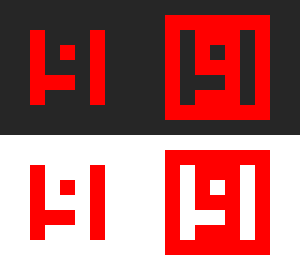
0.05 App Concept
1.0 Overview of Requirement
The proof of concept will fulfil the following requirements:
"We want the site to provide a platform for people interacting socially with each other, without their 'history' being accessed."
THIS NEEDS TO BE FILLED OUT
2.0 Functionality
Need more in here.
2.01 Search Engine Ranking
This will take a backseat to the actual build of the application.
-
The website should be accessible to search engine spiders and be coded with decent on-page search engine optimisation in mind.
-
We need individual posts to come up in searches (even though they don’t last forever - also a way to stop google caching them?)
3.0 List of Pages
3.01 Welcome Page
Login/sign-up page for desktop will have links at the bottom for advertisers as well as privacy policy and shite.
Mobile will be a ‘first use’ unless they log out, do not know if possible but if we could have the log ins/outs tied to the phone number (sim) that would be amazing for swapping phones and stuff.
Mobile version will literally have a 'login' and a 'register button' along with the logo.
3.02 Sign up process (mobile)
For mobile we need them to enter as much info as possible with their first sign up. Mainly because we don’t have a large screen-space for popups about adding more information later.
3.03 Home / Feed
This is the page people will hit the most so it needs to be easy to navigate. Central block of posts from everyone you are following as well as promoted posts (this also helps to fill out a users home page before they connect with anyone).
3.04 Settings
Speaks for itself, a page containing the settings that a user can modify.
-
Username / Nickname
-
First Name
-
Last Name
-
Date of Birth
-
Email Address(s)
-
Phone Number(s)
-
Password
-
Privacy Setings (flesh out)
-
Langauge (localisation)
-
Profanity Filter default on
-
Show adult (18+) groups default off
-
set standard post duration default 1 hour
- 1 hour - 24 hours for standard accounts
- 1 hour - 1 week? for premium
Premium Settings
-
toggle character limit default on
-
toggle featured posts default on
-
Apply for verification badge (like twitter's 'verified') <- need to discuss this
3.05 Groups
This page will have multiple lists on it. Some thoughts on possible default lists:
- popular
- new
- subscriptions
- premium? not sure what would go in here maybe like an ama group for us and a suggestions group and stuff
If as user has it toggled on it will also display adult (18+) groups, these will probably have to be tagged manually. It also means we'll have to moderate the other non-adult tags for adult content somehow. Maybe a report feature with a queue? Ah and if a post is tagged into multiple groups with one (or more) group being an 18+ then it's hidden from all groups unless the 18+ content is toggled on.
3.06 Friends
Pretty standard one here, just a long list of your friends with links to each of their profiles. Will have a little button to unfriend... or maybe a swipe right (?) and then a little unfriend button comes up.
At some point we could have a facebook stlye 'do you know these people' thing based off how many of your friends share friends.
3.07 Profile
3.07.01 You
A users personal profile displayed for them. No friend or unfriend buttons but quick post control, can delete by sliding to the right and clicking
ADD IMAGE OF THIS IN HERE
3.07.02 Others
3.08 Notifications
Page which has a list of your notifications, one of the only pages on the site that has a complete history from the second you create your account.
3.09 Search
Allows users to search for groups, other users or public posts.
4.0 Content
4.01 Table of Elements
4.01.01 Colours
| name | rgb | a |
|---|---|---|
| main | 255 , 0 , 0 | 1 |
| white | 250 , 250 , 250 | 1 |
| black | 10 , 10 , 10 | 1 |
| light-grey | 200 , 200 , 200 | 1 |
| grey | 150 , 150 , 150 | 1 |
| dark-grey | 50 , 50 , 50 | 1 |
| green | 40 , 220 , 90 | 1 |
| dark-green | 25 , 170 , 70 | 1 |
| red | 255 , 0 , 0 | 1 |
| dark-red | 180 , 0 , 0 | 1 |
| blue | 80 , 160 , 240 | 1 |
| dark-blue | 60 , 110 , 170 | 1 |
4.01.02 Backgrounds
| class/id | name | description | colour | interactable |
|---|---|---|---|---|
| # | prime-background | solid background on landing page, main colour of app | main | no |
| . | register-background | solid background on register page | blue | no |
| # | standard-background | solid background on most pages | white | no |
| . | settings-background | solid background on settings page | blue | no |
4.01.03 Inputs
| class/id | name | description | type | starred-out | interactable |
|---|---|---|---|---|---|
| . | login-username | username input on login page | text | no | yes |
| . | login-password | password input on login page | text | yes | yes |
| . | register-fname | first name input on register page | text | no | yes |
| . | register-lname | last name input on register page | text | no | yes |
| . | register-username | username input on register page | text | no | yes |
| . | register-email | email input on register page | text | no | yes |
| . | register-dob-d | date of birth day input on register page | drop-down | no | yes |
| . | register-dob-m | date of birth month input on register page | drop-down | no | yes |
| . | register-dob-y | date of birth year input on register page | drop-down | no | yes |
| . | register-location | location input on register page | text | no | yes |
| . | register-password1 | first password input on register page | text | yes | yes |
| . | register-password2 | second password input on register page | text | yes | yes |
| . | register-phone | phone input on register page | text | no | yes |
| . | register-pin | pin input on register page | text | no | yes |
| . | search-text | text input on search page | text | no | yes |
4.02 Localisation
5.0 Style and Layout Concepts (for Mobile)
5.01 Pages
Welcome Page:
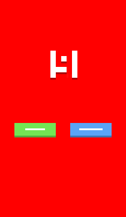
Login Page:
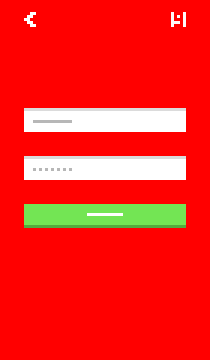
Register Page:
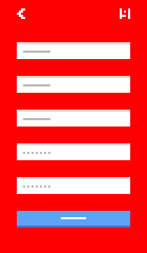
Feed:
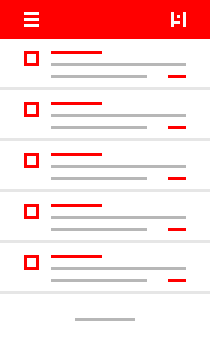
Friends:
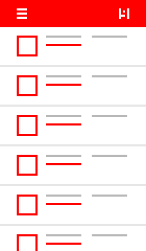
Groups:
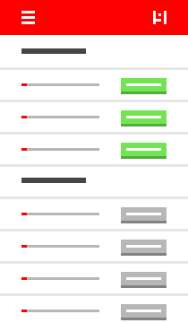
New Post:
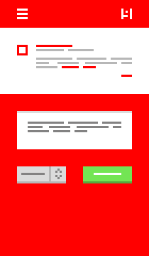
Profile:
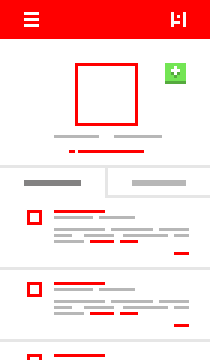
Notifications:
NEED TO DO THIS ONE
Search:
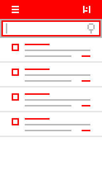
5.02 Elements
5.02.01 Sidebar
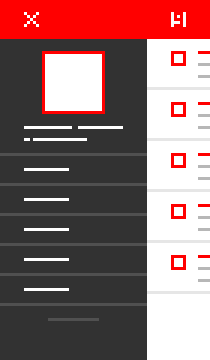
5.02.02 Navbar
The navbar will show the menu icon if you're at the menu level of the app (anything that can be accessed from the menu). Otherwise it'll show a small 'back arrow'.
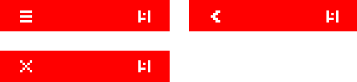
5.02.03 Buttons
5.02.04 Inputs
5.02.05 Fonts
Thin. Thin thin thin thin thin, also sans-serif. There are plenty of free fonts floating around the place and we can use one or more of these.
some suggestions
Algreya Sans (Thin 100):

Josefin Sans (Thin 100):

Roboto (Thin 100):

5.02.06 Icons
I like the idea of having quite thick, sharp icons to contrast the fonts. None of this round-corner bollocks. We'll need to have a look for some free icon packs and choose one or more that fit the bill.
At some point I'd love to do a custom icon pack to really fit in with what we're building, but that will take time and can be done later down the line.
some suggestions
Themify.me:
Modern UI Icons:
Iconic:
5.02.07 Avatars
We need to think about how this is going to work, I need to style out a simple interface for cropping images as well.
- Users will have to be able to upload an image from their phone (of any size)
- It will be stored on our servers briefly
- They crop it to show what they want as their avatar
- Our servers will squash or enlarge the image (bicubic interpolation? nearest neighbour?) into the different avatar sizes for the site (e.g: 16x16, 32x32, 64x64)
- The original image that was uploaded is deleted from our server
- The users profile and posts are updated to show the new avatar
n.b: uploading images is going to be much more costly in terms of bandwidth than posting, maybe have it so non-premium accounts can only change their avatar once per week/month? Thoughts?
5.02.08 Posts
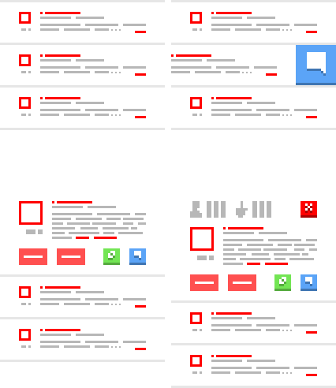
5.02.09 Lists
6.0 Interaction
6.01 Changing Pages
Pages will all transition horizontally, scrolling is done vertically.
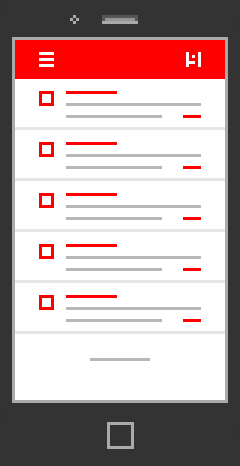
6.02 Sliding the sidebar
Sidebar can be slid out with a drag to the right action or by clicking on it's icon in the navbar.
It'll slide like so:
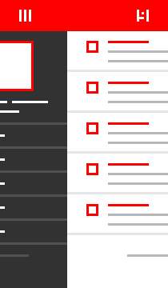
6.03 Refreshing the Page
Above sections with lists of posts there will be a pull-down refresh. I ALSO NEED TO STYLE A LITTLE TAB TELLING USERS THAT THERE ARE NEW POSTS
6.0X Adding and Removing Friends
Friends can be added from the profile page of the person you wish to add. They can be removed from the profile page as well, in addition to being removed directly from your friends list.
6.0X.01 Adding a Friend From the Profile Page
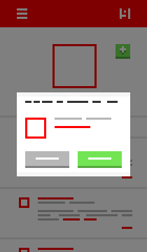
6.0X.02 Removing a Friend From the Profile Page
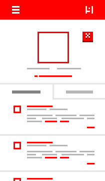 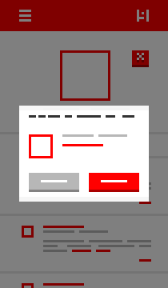
6.0X.03 Removing a Friend From the Friends List
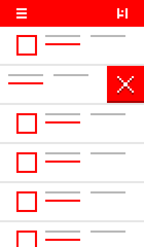 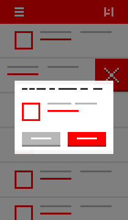
7.0 Additional Requirements
7.01 Accessibility
- This product must comply with the standards of accessibility contained in W3C WAI (World Wide Web Consortium Web Accessibility Initiative) level A Guidelines.
- The product must comply with US Section 508 Accessibility Guidelines.
7.02 Valid Code
All code on the product should tend toward W3C (World Wide Web Consortium) specifications.
7.03 Hosting
Need to work out exactly how we're going to set this up.
Also need to find some numbers on facebook/twitter/snapchat/etc. user growth and ammount of posts sent per day so we can try to predict a best case scenario for growth and line that up with costing out servers.
7.04 Support
As the website is being launched as a proof of concept with the mobile version first, I think we can just take bug reports for now.
7.05 Localisation
I think that all blocks of text on the app should be put into an array that is called from when populating the pages. This will take a little bit more work when working on the first build, but it will make translating a lot easier with us being able to send people the array to translate with reference images. In the long run it should also cut costs and the overall size of the download.
Also on the subject of lacalisation I have friends who can do Swedish, Russian and German for us at pretty much no cost. Maybe we should ask Pak if he's up for simplified Chinese?
Have a think about people you know who could sort translations for us. Ideally as a pro-bono thing but I'm cool with tossing small percentages of the company to anyone involved.
8.0 Monetisation
I had a thought recently that I should put this in here. All of these numbers are ball-park, we will need to try to work out what prices are acceptable and also to work out region specific pricing. Maybe tie the pricing to where the phone number is registered rather than the language or whatever?
8.01 Premium Membership
Base rate at something like £1.00 per month, access to premium features and also removal of ads... Though it will not remove promoted/featured content. This NEEDS to be set up to auto-renew, otherwise we'll see a massive drop in premium membership at the end of every month.
Had another thought on this, we can say that premium accounts can go 'private' or 'friends-only' or whatever and non-premium accounts can't.
8.02 Advertising and Featured Content
Need to discuss rates on things like this. Promoting groups, posts, accounts etc. Also advertising that fits into feeds like a post. I'm not keen on banner ads or things like that. HTML5 video would also be quite nice, though I'm not sure how keen I am on audio... I actually really hate audio adverts and I'm sure that any users of our platform would as well.
8.03 Metadata Sale
We can't in good faith sell any data which contains any personal information, however I feel confident that selling aggregated data is a perfectly sound model to work with. This will obviously take space to store ergo costing more but I think that we can more than offset that with sales of the data to firms that could analyse it and sell it on to other companies. Buzzword: Big Data.
8.04 Virtual Items (e.g: stickers)
Do people buy these? I need to do some market research to ascertain whether or not it's worth doing this. Or if it's even worth setting up the system with this potential revenue stream in mind.
8.05 Changing Certain Settings
I'm thinking primarily Date of Birth. If people enter a date of birth to purposefully access adult (18+) content on the app then they are likely to want to change their birthday to the correct date once they are older (and potentially embarassed). This will disincentivise young people from entering false DoBs and also potentially get us some money down the line when people want to change their birthday.
8.06 Paid Text Service
If we want pins and other information to be sent via text to a user's phone then it stands to reason we should charge for it. Hopefully a tiny ammount like ten pence per text. We'll need to coordinate with a company that can send premium texts and will hopefully take a percentage of what we're making on the texts rather than wanting a flat fee (reducing startup costs is paramount). Even if we're only getting a small ammount per text sent that's still much better than having to pay to send the users texts.
The idea is to make it small enough that a user would have no problem in paying it (ergo it may have to vary depending on region) but large enough that it can be a small but consistant revenue earner.
8.07 Account Closure / Account Restoration
If a user -for whatever reason- wishes to close their account (which is the same as completely hiding it from everyone who isn't an admin), then a one time fee of something like £5.00 (?) should be in place to 'stop frivolous use of the system' and to make money. Similarly if a user wishes to restore an account which was previously closed then the same one time fee would be applied once again.
X.X Unordered
User
| name | type | description | visible | can be hidden |
|---|---|---|---|---|
| id | integer | user id number | no | no |
| username | string | unique username | yes | no |
| first name | string | user's first name | yes | yes? |
| last name | string | user's last name | yes | yes? |
| ? nickname ? | string | user's nickname | yes | yes? |
| email address | string | user's email address | yes | yes |
| phone number | string | user's phone number | yes | yes |
| date of birth | date? | user's date of birth | yes | yes |
| is verified | boolean | yes/no verification | yes | no |
| is premium | boolean | ye/no premium account | yes | no |
| friends | some form of linked list to make it alphabectical? | user's friends | yes | no |
| posts | I have no idea... | user's posts | yes | no - have to be hidden individually |
| total posts | integer | user's total posts | no | no |
| unique profile views | integer | total number of times profile has been viewed by unique visitors | no | no |
| creation date | date | date the account was created | yes | no |
| account age | time? | current date/time subtract creation date/time | no | no |
| posts per day | decimal | total posts divided by account age | no | no |
- There should be more in here, Will... ideas?
Post
| name | type | description | visible | visible to poster |
|---|